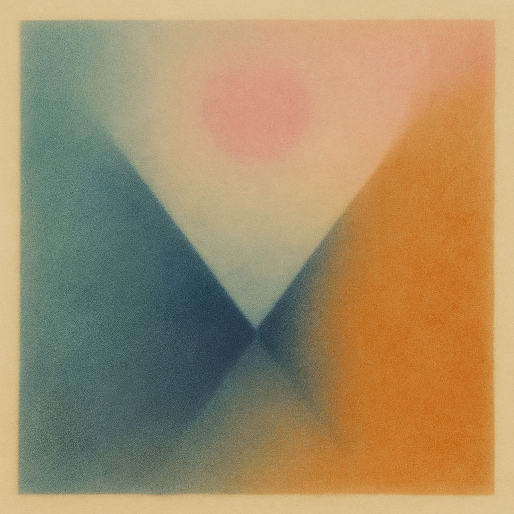

最新情報
あらすじ
登場人物
登場人物一覧
相関図
管理者
マップ
手引書
シン播磨風土記
まちづくり例
メモリー
ヒメログ
ライブ
ヒメラジ
問合せ
播州事情
NEWS
令和七年四月九日
サイト修正の巻
令和七年四月九日
サイト修正の巻
令和七年四月八日
サイト公開の巻
令和七年四月八日
鍵を握る人物・谷澤氏と面会
令和七年四月九日
江戸で密会、巌城氏の名が浮上
令和七年四月十日
【次回予告】八田くん調整！BJネヅル降臨
令和七年四月十一日
【インタビュー】焼き鳥を食べながら脚本家・百面惣さんに聞いた夢ドラ2995『播州サバイブ』の楽しみ方
令和七年四月十一日
六反田が花盛りを迎えています！
令和七年四月十五日
【特別企画】ロゴ公開を間近に控えた『播州サバイブ』制作室より特報！〜未来を託すカタチとは！？〜
熊庵の縁側
Chat Room
優夏：
今日もヒメジは晴れとるで〜
柳楽：
フラワータウンで朝市やってたな。
送信
公式SNS
FOLLOW US

公式SNS
Follow Us
Tweets by himesoku_hirao
+ FOLLOW